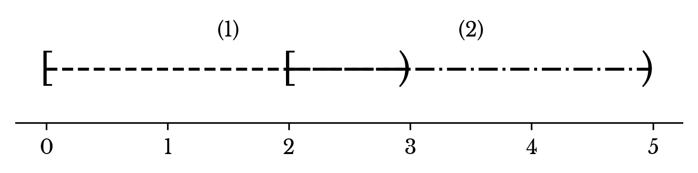

RangeMap: A Simple Interval Query Datastructure
Thu, 04 Jul 2019
Algorithms, C++, Computer Science, Interval Query, Software
Maps are a fundamental data structure. Their prevalence is a testament to their importance. Indeed, many search problems can be reduced to the construction of an appropriate map. However, a search problem occasionally arises that is difficult to solve, at least directly, with a map. The interval query problem is one such problem.
The Problem
The interval query problem can be stated as follows. Given a list \(L\) of intervals of the form \([a, b)\) and a point \(p\), determine the set of all intervals in L that contain \(p\). At first glance, the problem seems like something that could be solved using an
std::map with an appropriate comparator. Looking more closely, however, the comparator is ill-defined when the intervals overlap; there is no clear way to satisfy the invariants necessary to produce a meaningful tree.
Unfortunately, the C++ (or even Python) standard library does not include an interval tree. 3rd party solutions from Boost and the like are present but not always options in a professional environment. While working on another project, the interval query problem came up again as an area for performance optimization. At the present, long and involved sessions of "Google-fu" on the topic produce little more than a hodge-podge of Stack Overflow answers like "use [heavy-weight 3rd party platform]" and other more obscure results of questionable veracity.
The Idea
It appears the primary difficulty in the interval query problem arises when there are overlapping intervals. However, the case of overlapping intervals can be reduced to the case of non-overlapping intervals. Take for example the two intervals \([0, 3)\) and \([2 ,5)\) labeled 1 and 2 respectively.

Figure 1: Two Overlapping Intervals
As show in Figure 2, these can be broken up into 3 intervals \([0, 2)\), \([2, 3)\), and \([3, 5)\) labeled (1), (1, 2), and (2) respectively.
Figure 2: Subdivided Intervals
In this way, the original intervals are subdivided into non-overlapping intervals that each map to a set of labels.
A Tabular Approach
This subdivision is accomplished by sorting the start and end points of the intervals separately and performing a linear merge of these arrays. At each iteration, a running set of active intervals is maintained by recording the intervals that open and close at each point. At each point the active set changes, an interval ending at that point is recorded along with the previous active set. For ease of querying, additional markers are inserted at \(-\infty\), \(+\infty\) so that the entire number line falls within exactly one of the sub-divided intervals.
The results of the above merge are recorded in two parallel arrays to facilitate fast queries. The sorted start and end points are stored in the first array, while the corresponding sets of labels are stored in the second. Queries are performed with a binary search in the first column. If the query point is less than the element found in the search, the desired labels are found at the same index in the second array. Otherwise, the labels are in the previous element. In this way, the query is performed in logarithmic time.
Source Code
A C++ implementation of the data structure described above is
available here. The entire data structure is available in a single header file with no dependencies in addition to the C++ standard template library.